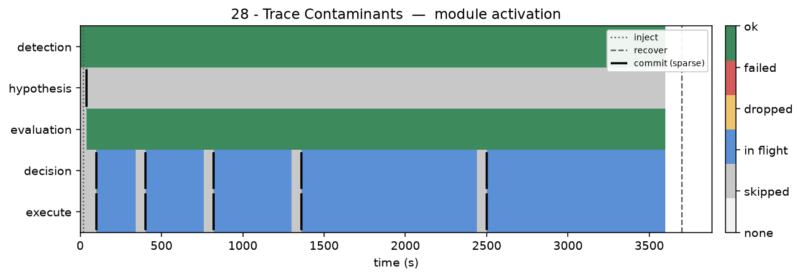
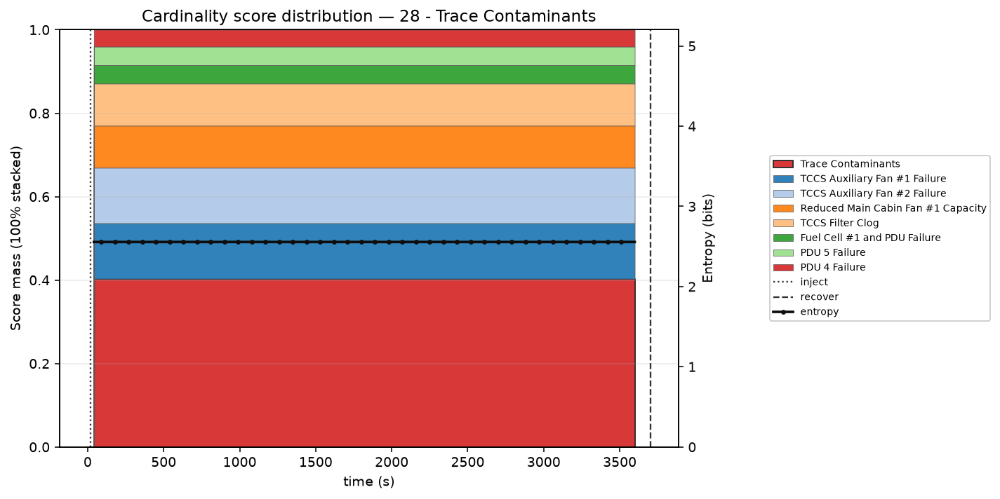

Module activation



| Hypothesis | P | T | P/T |
|---|---|---|---|
| 1. Main Cabin Fan Failure | 0.000 | 3 | 0.0000 |
| 2. Reduced Main Cabin Fan #1 Capacity ▸ | 0.101 | 4 | 0.0252 |
| 3. TCCS Auxiliary Fan at Reduced Capacity | 0.000 | 4 | 0.0000 |
| 4. PDU 5 Failure ▸ | 0.044 | 6 | 0.0074 |
| 5. PDU 4 Failure | 0.040 | 6 | 0.0067 |
| 6. Emergency O2 System Maintenance | 0.000 | 8 | 0.0000 |
| 7. Fuel Cell Degrade | 0.000 | 8 | 0.0000 |
| 8. Fuel Cell Failure | 0.000 | 8 | 0.0000 |
| 9. CDRA LiOH Canister Saturation | 0.000 | 12 | 0.0000 |
| 10. Loss of Pressure | 0.000 | 12 | 0.0000 |
| 11. MOXIE Antenna Failure | 0.000 | 12 | 0.0000 |
| 12. MOXIE ECM Failure | 0.000 | 12 | 0.0000 |
| 16. Fuel Cell #1 and PDU Failure ▸ | 0.044 | 14 | 0.0032 |
| 22. TCCS Filter Clog ▸ | 0.101 | 18 | 0.0056 |
| 24. Trace Contaminants ★ ▸ | 0.403 | 20 | 0.0202 |
15 of 31 · ★ truth · ▸ attempted · highlight = first pick · P=0 if unscored at first decision
Sequence: Reduced Main Cabin Fan #1 Capacity → PDU 5 Failure → Fuel Cell #1 and PDU Failure → TCCS Filter Clog → Trace Contaminants
TTR: 61.4 min · attempts 5 · wrong 4